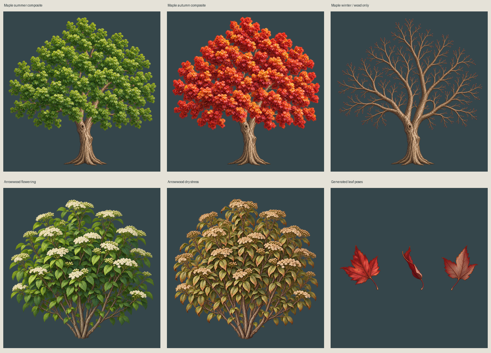

Red maple and southern arrowwood. These are not the San Diego local pack. Static plant states; generated leaf-pose playback below.
Three generated front / edge-on / underside poses, 6 fps ping-pong. This preview does not implement wind physics, falling, collision or engine admission.

Common tree structural base is reused exactly. Seasonal foliage shapes differ: alpha ≥128 IoU 0.9118. Shrub root differs by about 2 pixels and bark is regenerated. No pixel-exact root claim.